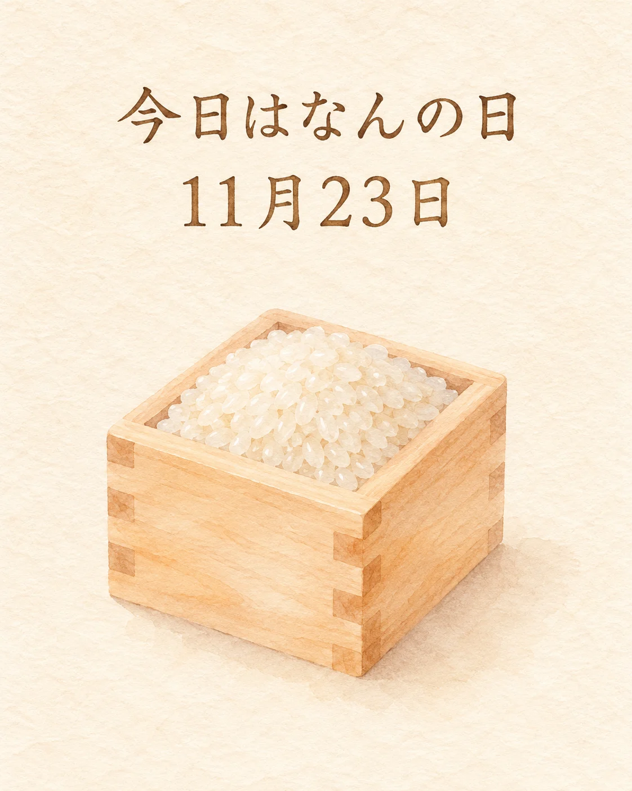

11月23日は「新嘗祭（にいなめさい）」です🌾
その年に収穫された新穀を神々にお供えし、実りの恵みに感謝するお祭りです。京都の上賀茂神社でも、11月23日に新嘗祭が案内されています。
ご飯としていただくお米も、日本酒のもとになるお米も、田んぼで育まれた大切な実り。和食と日本酒を楽しむひとときに、食材を育て、食卓へ届けてくださる方々への感謝も添えたいですね。
季節の味わいとともに、心ほどけるひとときをお過ごしください✨
米の実りに感謝する新嘗祭
宮内庁の主要祭儀一覧では、新嘗祭は11月23日、新穀を神々に供えて感謝する祭典と説明されています。京都の上賀茂神社も11月23日に新嘗祭を案内しています。京都市公式の2026年行事一覧にも、新熊野神社などで同日に行われる新嘗祭の記載があります。
10月17日の神嘗祭と11月23日の新嘗祭は、別の祭典です。和食と日本酒を支える米の文化を通して、収穫と食卓を支える営みに思いを向ける日としてご紹介します。
当店が祭典を主催・協賛・参加する告知ではありません。当日の新米や特別料理の提供を示すものでもありません。11月23日の当店営業は2日前までのご予約がある場合の案内です。ご予約状況や営業の確定はお電話でお確かめください。
出典：宮内庁・主要祭儀一覧、上賀茂神社・祭事暦、京都市公式・2026年行事案内（2026年11月23日確認）。